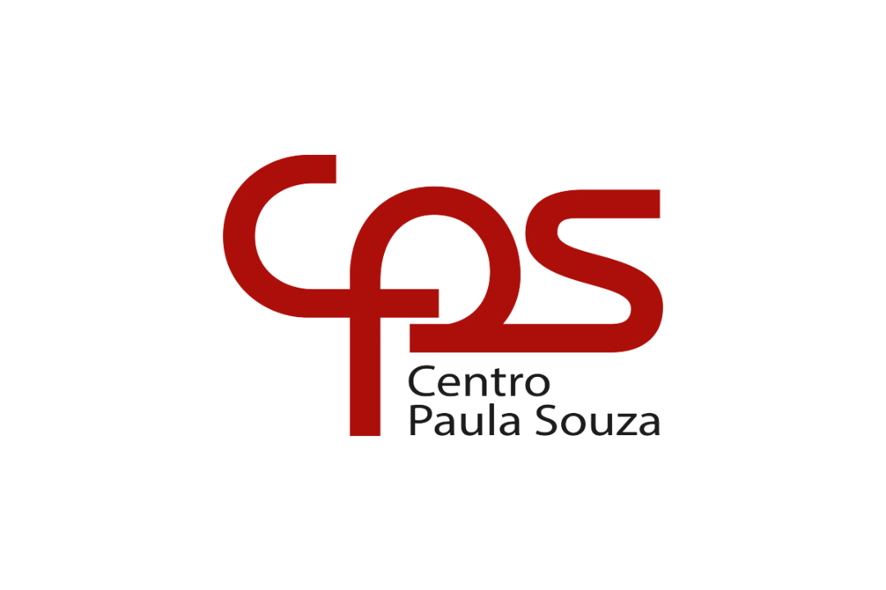

Regional 08Conheça o novo assistente virtual do CPS Regional 08, uma ferramenta desenvolvida para facilitar o acesso às informações institucionais, esclarecer dúvidas e oferecer orientações com o apoio da inteligência artificial.
Tudo isso diretamente pelo WhatsApp!
Conheça o AssistenteO Assistente Virtual é uma ferramenta inteligente criada para facilitar o atendimento às unidades de ensino da Regional 08.
Por meio do WhatsApp, permite consultar informações, esclarecer dúvidas e localizar orientações com base em documentos oficiais, legislações, deliberações, instruções técnicas e manuais institucionais do Centro Paula Souza.
Seu objetivo é tornar o acesso à informação mais ágil, organizado e acessível.
Encontre informações sobre deliberações, instruções técnicas, legislações e diretrizes institucionais.
Faça perguntas sobre procedimentos educacionais e administrativos e receba orientações fundamentadas nos documentos oficiais.
Registre dúvidas e solicitações que necessitam de acompanhamento especializado.
Quando necessário, o assistente encaminha a demanda para atendimento da equipe responsável.
Tenha acesso facilitado a orientações e documentos institucionais em um único canal de atendimento.
Entre em contato com o número oficial do Assistente Virtual CPS Regional.
Digite sua dúvida de maneira clara e objetiva, como se estivesse conversando normalmente.
O assistente irá buscar informações na base de conhecimento institucional e apresentar uma resposta.
Caso sua dúvida não seja solucionada, você poderá solicitar o encaminhamento para atendimento humano.
A ferramenta foi desenvolvida para apoiar os profissionais e integrantes da comunidade educacional vinculados à Regional 08.
Atendimento facilitado: consultas diretamente pelo WhatsApp.
Agilidade: acesso rápido a orientações institucionais.
Confiabilidade: respostas fundamentadas em documentos oficiais.
Centralização: informações reunidas em uma base de conhecimento.
Continuidade: registro das dúvidas para aprimorar os atendimentos.
A tecnologia a serviço da educação, aproximando informações, facilitando atendimentos e fortalecendo a comunicação entre as unidades de ensino.